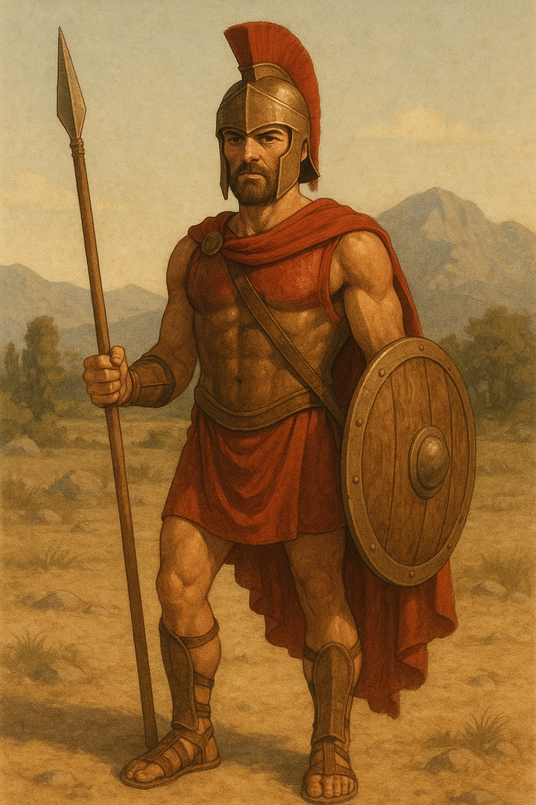
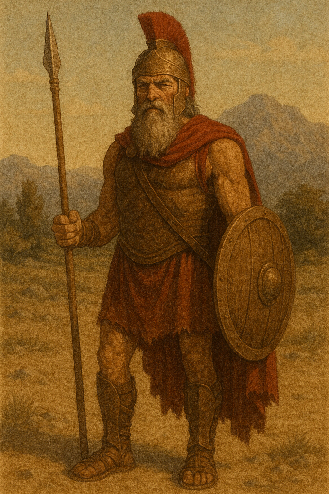
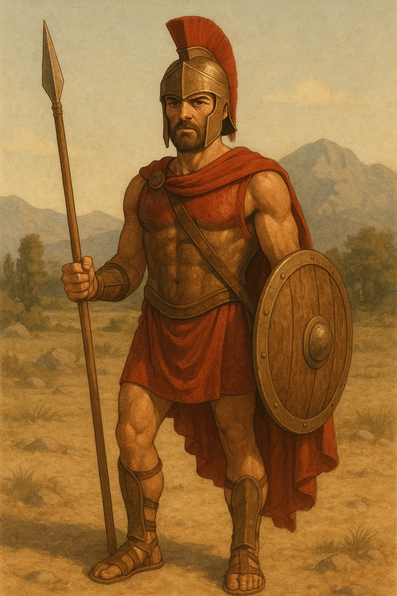
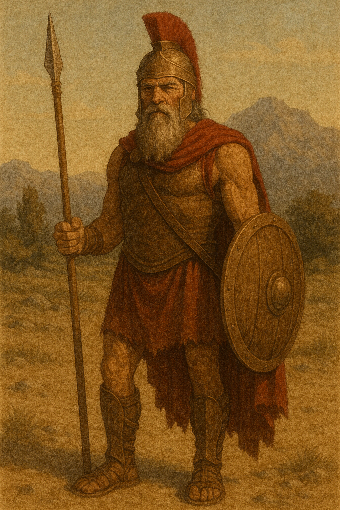

🧠Fun Facts About Sparta
Did you know Spartans had some of the coolest (and strangest) habits in all of Ancient Greece? Let’s uncover their secrets!
⚔️ Spartans Didn’t Lock Their Doors
They believed their strength protected them — not wooden locks!
🲠Their Soup Was Called “Black Broth”
It was made from pig’s blood, salt, and vinegar. Yuck or yum?
💬 They Spoke Very Little
Spartans were known for short, clever replies — they didn’t waste words!
👑 They Had Two Kings at Once
Most cities had one king. Sparta had TWO who ruled together!
👧 Girls Had More Freedom
Unlike other Greek cities, Spartan girls went to school and played sports.
💪 “Come Back with Your Shield...”
...“or on it!†Mothers told their sons this before battle. It meant: be brave or die trying.
🏛️ What Made Sparta So Special?
Sparta was not just a place of warriors — it was a city of honor, courage, teamwork, and super cool traditions. People all over the world still talk about how amazing Spartans were!
🉠Want More?
Check out our Warrior Page or try the upcoming quiz!
 


